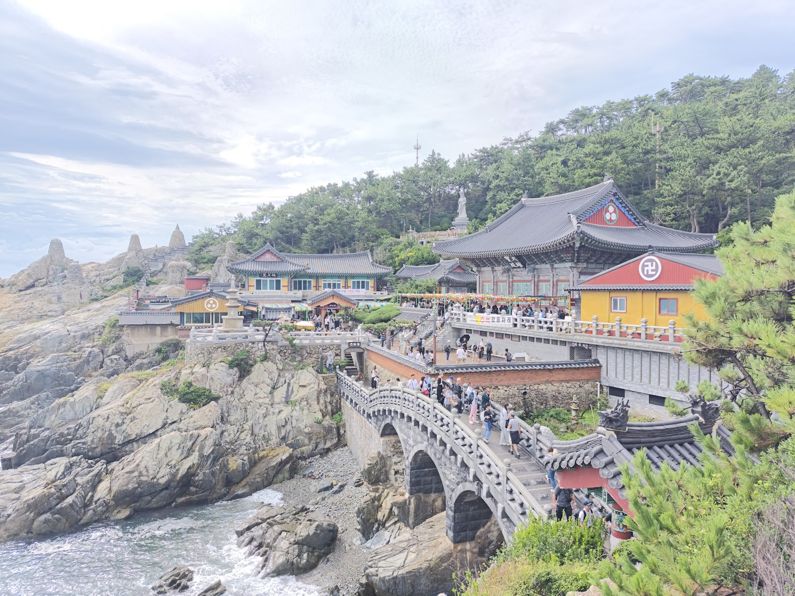

Haedong Yonggungsa Temple: Busan’s Seaside Sanctuary
At a glance: Haedong Yonggungsa is a Buddhist temple in Gijang, on Busan’s northeastern coast. Its colorful buildings, stone stairways and ocean views make it a memorable stop for visitors seeking a different side of the city. The grounds are open to visitors, but expect steps, crowds and weather exposure.
Address: 86 Yonggung-gil, Gijang, Busan
Google rating: 4.5/5, based on 27,862 reviews at the time of writing.
A temple beside the sea
Many of Busan’s best-known sights are beaches, markets and busy city neighborhoods. Haedong Yonggungsa offers a change of pace: a Buddhist temple complex set directly beside the sea. Rather than sitting quietly on a forested mountainside, it faces the open coast, with waves and sea air forming part of the visit.
The temple’s setting is its defining feature. Traditional roofs and brightly painted details stand out against the blue water, while paths and stone steps lead visitors through the complex and toward viewpoints over the shoreline. It is a place of worship as well as a popular sightseeing destination, so expect to share the grounds with other visitors, particularly at busy times.
For international travelers, the appeal is easy to understand even without a deep knowledge of Korean Buddhism: the contrast between the temple’s intricate architecture and the broad coastal view makes the site distinctive. Allow time to look around rather than treating it only as a quick photo stop. Views change as you move through the grounds, and the sound of the water gives the visit a different atmosphere from Busan’s urban attractions.
What to see and do
Take your time walking between the buildings and looking for places where the temple and coastline appear together in the same view. The route includes stairs and uneven sections, so comfortable shoes are more useful than footwear chosen just for photographs. If you want pictures without feeling rushed, pause at the viewpoints and be considerate of others waiting to pass or take photos.
Because this is an active religious site, keep your voice low near worshippers and avoid interrupting ceremonies or blocking entrances. Follow any signs or instructions posted on the grounds. When photographing people, ask permission where appropriate, and be especially discreet around anyone praying.
The coastal setting also makes conditions part of the experience. Wind and sea spray can make the area feel cooler or rougher than expected, while bright light can make the water particularly reflective. Check the weather before setting out and bring a layer if conditions call for one. On a wet day, take extra care on stone steps.
Planning your visit
Haedong Yonggungsa is in Gijang, outside Busan’s central districts, so treat it as a dedicated outing rather than assuming it is a short walk from the city center. Use the address or Google Maps link below to check the journey from your accommodation and confirm current travel options on the day. Travel time and the most convenient route will depend on where you start and local conditions.
You can pair the temple with other stops in Gijang if you are planning a day in the area, but avoid packing the schedule too tightly. The temple grounds require walking, and you may want time to enjoy the sea views or wait for a less crowded moment to take photographs. If you are visiting during a busy travel period, build flexibility into your plans.
Google currently lists Haedong Yonggungsa at 4.5 stars from 27,862 reviews. Treat this as a useful snapshot of visitor feedback, not a guarantee that every visit will be quiet or that conditions will be the same on your travel date. Naver local results did not provide a matching listing for this place, so the Google listing and official website are the practical references here.
Good to know
- Wear comfortable shoes: Expect stairs and walking on uneven surfaces.
- Respect the religious setting: Keep noise down around worshippers and follow posted guidance.
- Plan for the coast: Wind, rain and bright sun can affect comfort and photos; check the forecast.
- Check details before you go: Consult the official website or map listing for current visitor information. Do not rely on old travel posts for details that may change.
- Allow time: The temple is outside central Busan, and the journey depends on your starting point.
Useful links
FAQ
Is Haedong Yonggungsa worth visiting?
If you enjoy coastal scenery, temple architecture or a quieter counterpoint to Busan’s city attractions, it is a distinctive place to add to your itinerary.
Is the temple suitable for visitors with limited mobility?
The grounds include stairs and uneven paths, which may make access challenging. Check current accessibility information with the official website before visiting.
How should I get to Haedong Yonggungsa?
It is in Gijang, northeastern Busan. Check Google Maps from your starting point for current route options and allow time for the journey.